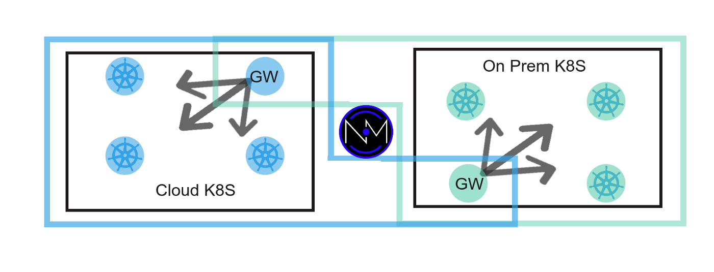
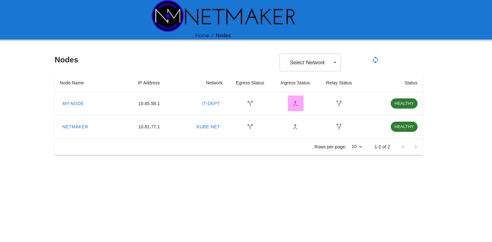
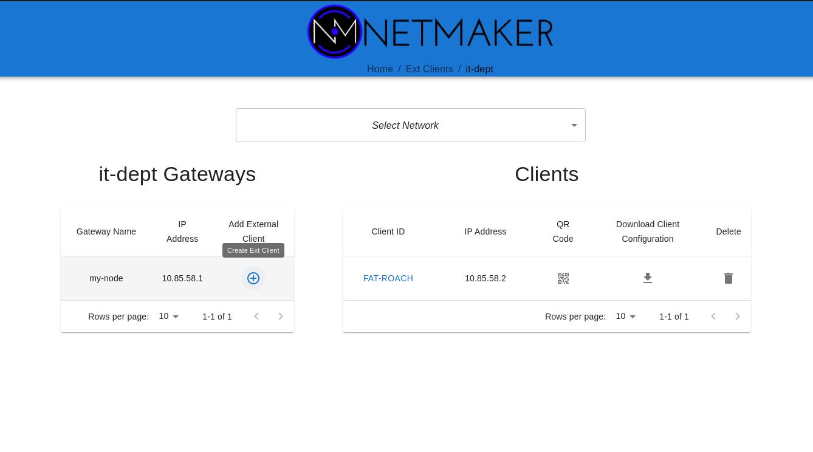
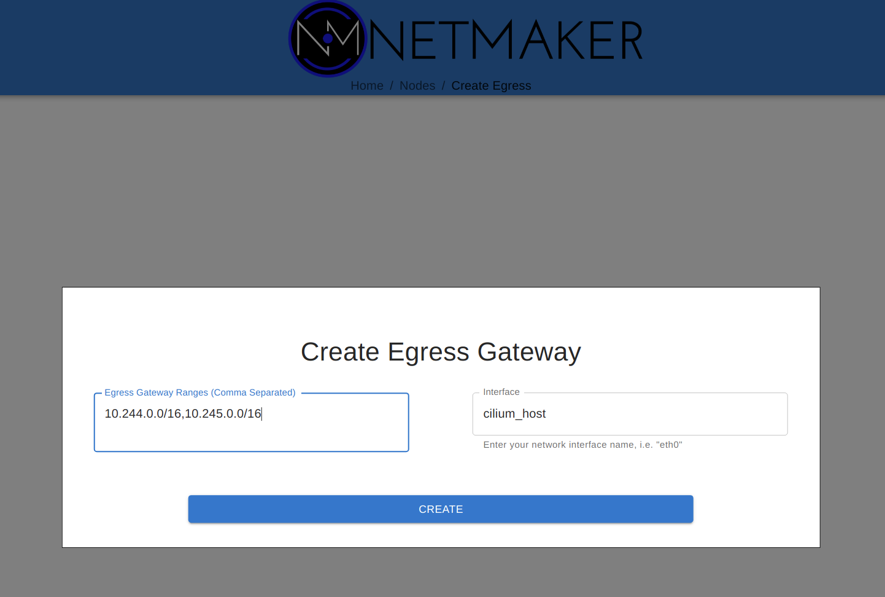

Additional Guides¶
The following are sets of guidance and best practices for setting up various use cases on Kubernetes. If you have not done so, please first complete this following guidance in the Deployment section of the documentation.
Remote Access (Inbound)¶
Remote Access to the internal cluster network is sometimes required for various reasons For instance:
Developers require access to a service on the development cluster in order to test components being developed locally. For example, they are developing a front end locally and wish to attach it to the dev cluster backend.
An application is hosted outside the cluster, and the team wishes to provide a VPN-based connection to an internal cluster service.
Whatever the scenario, setting up inbound remote access is relatively easy. All we need is a single network in Netmaker and a single deployment on the cluster. Create a network with Netmaker and deploy a netclient-gateway onto the cluster following guidance in the Deployment section of the docs.
Next, configure the gateway in the Netmaker UI. Run kubectl exec -it netclient-gateway ip a on each cluster to determine the interface used for the pod and service networks.
{kind=link}
Once the gateway is created, you can use the Netmaker server as an Ingress gateway. Click to create the ingress gateway on the Netmaker node, then in the Ext Client panel, create some WireGuard configs.
 {kind=link}
{kind=link}
These configs can be used with wg-quick (wg quick up /path/to/conf), and your machine will now have access to the cluster via the gateways (for more info, see here: https://man7.org/linux/man-pages/man8/wg-quick.8.html)
interface: mega-ninja
public key: XpRTNPLWvJE6H+mL56pcLWZ70GqhryE=
private key: (hidden)
listening port: 49781
peer: ctdL1h8FxrX2SkYx12L9sTu904=
endpoint: 152.181.121.135:51821
allowed ips: 10.101.0.0/16, 10.244.0.0/16
latest handshake: 29 seconds ago
transfer: 14.84 KiB received, 41.32 KiB sent
persistent keepalive: every 20 seconds
Remote Access (Outbound)¶
Outbound remote access is slightly more complicated, but still relatively straightforward. The primary use case here is if an application or environment needs to be accessible outside of the cluster. Netmaker can be provided to grant cluster applications secure access to an external application server or environment.
First, a DaemonSet must be deployed on all nodes that should have access to the external environment (a selector can be used to limit the set of nodes). Follow the Deployment guide to set up the DaemonSet.
Second, an additional netclient must be deployed in the environment where the cluster needs access. For instance, if it’s a Linux server, you can follow the guide to deploy a netclient on a linux VM: https://docs.netmaker.org/getting-started.html#deploy-nodes
This is enough to make an external VM accessible to the cluster. However, we may want to take this one setp further. Let’s say the VM is in a VPC, and we want full access to that VPC. Perhaps there are other applications deployed there which should be accessible. For this, we can configure that same VM as an Egress Gateway. In the UI, click to set the node as an Egress Gateway. Then specify the CIDR of the VPC, and the interface used to access this subnet (try running “ip a” on the machine to find the correct subnet.).
Your cluster nodes should now have full access to the specified CIDR. You may also just deploy multiple clients on whatever machines the cluster should be able to access, to limit the scope.
Cluster NAT Gateway¶
Sometimes, cluster traffic should be routed through an individual machine which acts as a “NAT Gateway” for the cluster. This way, it is easier to interact with external firewalls (only need to whitelist one entry point) and you can more easily manage outbound cluster traffic.
This scenario is almost identical to the Remote Access scenario, but with one distinction: In the Remote Access scenario, we set one machine as an egress gateway to a certain CIDR. In this scenario, the egress gateway routes for all public CIDRs.
Often, you will set the Netmaker server as the egress gateway. Then, simply paste in the list below, and specify the interface (typically eth0):
0.0.0.0/5,8.0.0.0/7,11.0.0.0/8,12.0.0.0/6,16.0.0.0/4,32.0.0.0/3,64.0.0.0/2,128.0.0.0/3,160.0.0.0/5,168.0.0.0/6,172.0.0.0/12,172.32.0.0/11,172.64.0.0/10,172.128.0.0/9,173.0.0.0/8,174.0.0.0/7,176.0.0.0/4,192.0.0.0/9,192.128.0.0/11,192.160.0.0/13,192.169.0.0/16,192.170.0.0/15,192.172.0.0/14,192.176.0.0/12,192.192.0.0/10,193.0.0.0/8,194.0.0.0/7,196.0.0.0/6,200.0.0.0/5,208.0.0.0/4
After creating the gateway, outbound traffic from the cluster will begin to flow through that server.
Note: You may be tempted to enter 0.0.0.0/0 as the CIDR for your gateway. This will not work. The netclient ignores gateway ranges that overlap with local CIDRs. 0.0.0.0 is a superset of all CIDRs, so overlapps with everything, and will be ignored. The above list accounts for most public CIDRs and should work for most use cases, while being customizable to allow for additional ranges.
Multi-Cluster Networking¶
Prereq 1: Multi-Cluster Networking can currently only be configured for clusters with non-overlapping pod/service CIDRs. Please confirm this before moving forward.
Prereq 2: This guide assumes you have 2 clusters, A and B. Similar steps can be followed for additional clusters (for 3 clusters, use 3 networks, etc).
To configure multi-cluster networking, you will need two networks. Let’s call these Cluster-A and Cluster-B. Create these in your Netmaker UI and give them separate subnets.
Deploy a DaemonSet on each cluster following the steps laid out in the Deployment documentation. The DaemonSet should use the key for the respective network.
We now have 2 mesh networks containing all of the nodes for each cluster, but they are not able to communicate with each other.
Next, deploy a gateway on each cluster for the opposite network. This gateway acts as the entrypoint for traffic coming from the other cluster. Follow the guide in the Deployment section for deploying a gateway.
Finally, configure each gateway as an Egress Gateway. Run kubectl exec -it netclient-gateway ip a on each cluster to determine the interface used for the pod and service networks.
{kind=link}
After completing this on both clusters, the pod and service network should now be directly accessible from each cluster.
Bonus: Service Discovery
To add DNS-based service discovery to your cluster, see this tutorial: https://itnext.io/multi-cluster-kubernetes-networking-with-netmaker-bfa4e22eb2fb